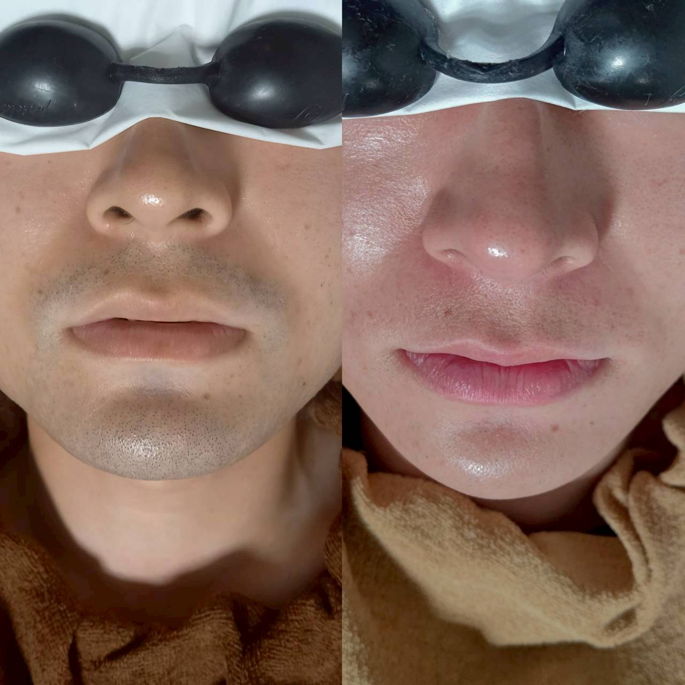

エステ脱毛と医療脱毛の違い、Iryが選べる理由

脱毛を検討する際、「エステサロンと医療クリニック、どちらに通えばいいのか」という質問をよくいただきます。今回はその違いについて簡単にご説明します。
医療クリニックで行われる医療脱毛はレーザーを使用し、医師や看護師のもとで施術が行われます。一方、Iryのようなエステサロンで行う光脱毛(フラッシュ脱毛)は、レーザーより出力を抑えた光を使用するため、痛みを感じにくく、幅広い方に受けていただきやすい施術です。
「効果が出るまでに回数が必要」という点は光脱毛の特徴のひとつですが、その分、価格を抑えて通いやすいというメリットもあります。Iryではパーツ制の明朗会計を採用しているため、必要な部位だけを選んで無理のない範囲で始めていただけます。
どちらが向いているかは、痛みへの感じ方や通える頻度、ご予算などによって変わります。効果には個人差がありますので、まずは無料カウンセリングでご自身に合った選択肢をご相談ください。